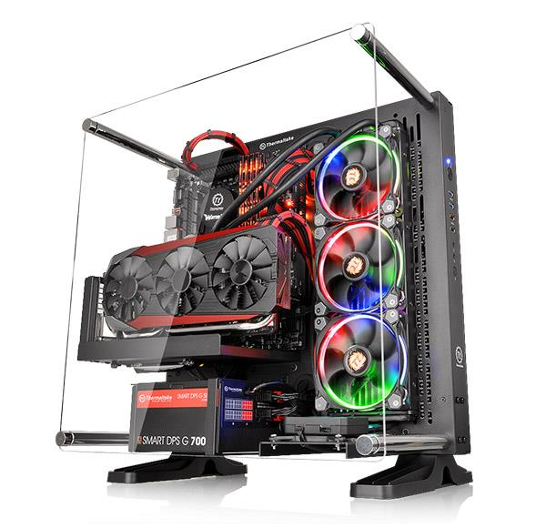

Tech MechTM
Products
Our main pre-built computer is a gaming PC designed to play any of the most high-end games, capable of running anything from heavy VR games, intense shooters, and even virtual machines! Designed to be a long lasting gaming PC with all the newest specs, it will surely last you several years, playing any of the most heavy games in 5, 10, even 15 years!

With a computer case bolstering a huge glass panel, all the parts within your computer can easily be displayed from beneath your desk. Additionally, with an 850W power supply powering an Intel Z390 Express Chipset, your computer can run incredibly smoothly while also housing 3 USB Type-C ports, 3 USB Type-A ports, and 1 HDMI port. The Intel I9-9900K processor, with a max turbo speed of approximately 5.0GHz, 4 16GB DDR4 DRAM sticks of RAM, and the GeForce GTX 1660 Ti graphics card, the computer will be able to easily handle many incredibly high-end games with air cooling fans keeping it from overheating.
In addition to the computer itself, you'll be able to play your games on an MSI Optix MAG241C 24" curved monitor along with a wireless gaming mouse and mechanical keyboard. On top of all these accessories include a pair of HyperX Cloud Stinger Gaming Headphones, a 930mm wide mouse pad, 2 USB desktop speakers, as well as 1 year of ESET NOD32 Antivirus and 1 year of Microsoft Office 365. On top of all this, the computer will be pre-installed with Play on Linux, a Linux distro based on Wine designed to act as a high-end gaming OS. Without all the unnecessary software on a normal Windows machine, Play on Linux will allow you to turn your computer into a focused gaming PC, all while using any Windows applications as you normally would on a Windows machine. All for only $3,499.99!